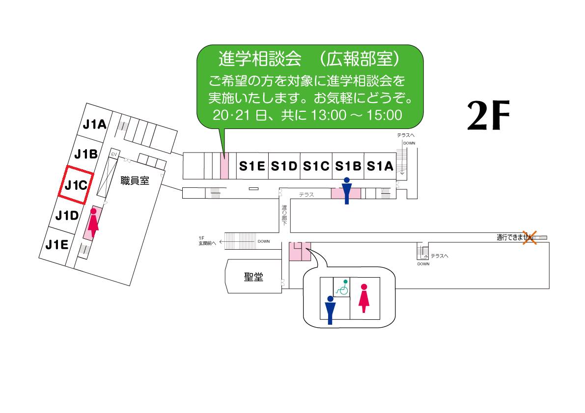

美術同好会
 南男美術万博
南男美術万博
生徒それぞれが画材や技法などについて調べ、作品を作ります。これまでの文化祭で展示してきたものとは異なる新しい美術同好会の展示を行います。ご来場お待ちしています。
南男美術万博生徒それぞれが画材や技法などについて調べ、作品を作ります。これまでの文化祭で展示してきたものとは異なる新しい美術同好会の展示を行います。ご来場お待ちしています。
理科部生物班
南男生物班から未来へつなぐ水辺の仲間たち
身近な用水路や河川、そして広い海――そこには、驚くほど多くの命があふれています。今回の展示では、生物班が実際に観察・採集し、大切に育ててきた水辺や海の生きものたちを紹介しています。小さな魚やエビ、カニ、水生昆虫に、美しい海の生きものたちも登場！「こんな生き物が近くにいるの？」と、きっとびっくりするはずです。自然のふしぎと感動がぎゅっとつまった水辺と海の世界を、ぜひのぞいてみてください。生きものたちの魅力を通して、自然の美しさや命のつながりを感じてもらえたら嬉しいです。
身近な用水路や河川、そして広い海――そこには、驚くほど多くの命があふれています。今回の展示では、生物班が実際に観察・採集し、大切に育ててきた水辺や海の生きものたちを紹介しています。小さな魚やエビ、カニ、水生昆虫に、美しい海の生きものたちも登場！「こんな生き物が近くにいるの？」と、きっとびっくりするはずです。自然のふしぎと感動がぎゅっとつまった水辺と海の世界を、ぜひのぞいてみてください。生きものたちの魅力を通して、自然の美しさや命のつながりを感じてもらえたら嬉しいです。
写真部

moment to memories
私たち写真部員それぞれの思い出の瞬間をぜひ見てください！
私たち写真部員それぞれの思い出の瞬間をぜひ見てください！
理科部天文班
きらきら星
"天文部では、今年も文化祭で星空の魅力をたっぷりお届けします！展示内容：・プラネタリウム：毎年大好評！本格的な星空投影で、宇宙のロマンを体感してください。• 模型展示：惑星や人工衛星等のの精巧な模型を展示。宇宙のスケールを感じよう！• 紙コッププラネタリウム制作体験：自分だけのミニプラネタリウムを手作り！星空を持ち帰ろう！初心者も大歓迎！天文部のブースで、宇宙の不思議に触れてみませんか？ぜひお越しください！"
"天文部では、今年も文化祭で星空の魅力をたっぷりお届けします！展示内容：・プラネタリウム：毎年大好評！本格的な星空投影で、宇宙のロマンを体感してください。• 模型展示：惑星や人工衛星等のの精巧な模型を展示。宇宙のスケールを感じよう！• 紙コッププラネタリウム制作体験：自分だけのミニプラネタリウムを手作り！星空を持ち帰ろう！初心者も大歓迎！天文部のブースで、宇宙の不思議に触れてみませんか？ぜひお越しください！"
無線部
 無線が創る未来の世界
無線が創る未来の世界
"無線部では、電波の魅力を体感できる展示をご用意！展示内容：• ドローン体験飛行：ドローンを操縦して、空中散歩を体験！• 無線交信体験：実際の無線機を使って、遠くの人とつながる感動を味わおう！• 巨大アンテナ動作展示：迫力満点のアンテナが動く様子を間近でチェック！電波の世界を楽しみながら、無線部の活動を覗いてみませんか？初心者大歓迎！ぜひ遊びに来てください！"
無線が創る未来の世界"無線部では、電波の魅力を体感できる展示をご用意！展示内容：• ドローン体験飛行：ドローンを操縦して、空中散歩を体験！• 無線交信体験：実際の無線機を使って、遠くの人とつながる感動を味わおう！• 巨大アンテナ動作展示：迫力満点のアンテナが動く様子を間近でチェック！電波の世界を楽しみながら、無線部の活動を覗いてみませんか？初心者大歓迎！ぜひ遊びに来てください！"
歴史研究同好会
 シ。-日本の城について-
シ。-日本の城について-
" 歴史研究同好会では、歴史に詳しくない方もマニアの方も楽しめる展示を行います。今年のメインテーマは数年ぶりとなる「日本の城」。タイトルは「シ。-日本の城について-」です。東校舎3階にある社会科教室2のドアをくぐると近年の発掘により話題となった豊臣時代の大坂城を再現したジオラマ展示が皆さまをお迎えします。また、部員が執筆した城に関するレポートもご覧いただけます。そのほか、小さなお子さまから高校生まで着用できる甲冑体験や、戦国時代の武士さながらの弓体験もお楽しみいただけます。毎年盛り上がる飛翔祭。ぜひ、歴史研究同好会の展示にもお越しください。"
シ。-日本の城について-" 歴史研究同好会では、歴史に詳しくない方もマニアの方も楽しめる展示を行います。今年のメインテーマは数年ぶりとなる「日本の城」。タイトルは「シ。-日本の城について-」です。東校舎3階にある社会科教室2のドアをくぐると近年の発掘により話題となった豊臣時代の大坂城を再現したジオラマ展示が皆さまをお迎えします。また、部員が執筆した城に関するレポートもご覧いただけます。そのほか、小さなお子さまから高校生まで着用できる甲冑体験や、戦国時代の武士さながらの弓体験もお楽しみいただけます。毎年盛り上がる飛翔祭。ぜひ、歴史研究同好会の展示にもお越しください。"
将棋部
 南山男子部と将棋
南山男子部と将棋
僕たち将棋部は、将棋の楽しさを対局などを通して、お届けします。初心者の方でも駒の動かし方などサポートいたしますので、安心して楽しめると思います。ぜひ、ご来場ください。
南山男子部と将棋僕たち将棋部は、将棋の楽しさを対局などを通して、お届けします。初心者の方でも駒の動かし方などサポートいたしますので、安心して楽しめると思います。ぜひ、ご来場ください。
奇術部
 「南山魔法学校の体験入学」
「南山魔法学校の体験入学」
奇術部です！昨年度の文化祭にて金賞を受賞した我々が、今回なんと魔法学校の体験入学を2日間開催します！！昨年よりさらにパワーアップした奇術b､､､魔法学校のパフォーマンスを是非目の前でご覧ください！J1Aでお待ちしております！
「南山魔法学校の体験入学」奇術部です！昨年度の文化祭にて金賞を受賞した我々が、今回なんと魔法学校の体験入学を2日間開催します！！昨年よりさらにパワーアップした奇術b､､､魔法学校のパフォーマンスを是非目の前でご覧ください！J1Aでお待ちしております！
English Club
English Club Pavilion
Hi everyone! English Pavilionでは、英語を使った脱出ゲームや、万博での発見をシェアする万博紹介などを楽しめます！誰でも気軽に遊びに来てください！ Hi again! We’ve got exciting English activities like an escape game! Interested? Just come and join us!
Hi everyone! English Pavilionでは、英語を使った脱出ゲームや、万博での発見をシェアする万博紹介などを楽しめます！誰でも気軽に遊びに来てください！ Hi again! We’ve got exciting English activities like an escape game! Interested? Just come and join us!
パソコン同好会
～パ～パソコン同好会の過去と未来について
パソコン部総勢64人がそれぞれの得意分野に従って作品を出して、パソコン、電子工作、動画編集などに詳しくない方々も理解し、楽しめるように仕上げました。ぜひ来てください!!!
～パ～パソコン同好会の過去と未来についてパソコン部総勢64人がそれぞれの得意分野に従って作品を出して、パソコン、電子工作、動画編集などに詳しくない方々も理解し、楽しめるように仕上げました。ぜひ来てください!!!
理科部地質班
 化石と私たちの鉱石
化石と私たちの鉱石
理科部地質班は化石のクリーニング、鉱物の実験、化石の採集、展示などさまざまな活動を行っています。
化石と私たちの鉱石理科部地質班は化石のクリーニング、鉱物の実験、化石の採集、展示などさまざまな活動を行っています。